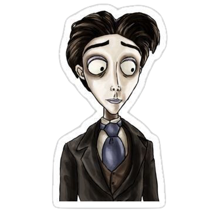
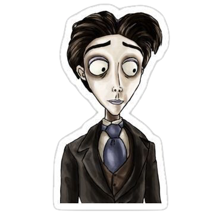

Coraline VR
MuW201 Tangible Computing
Through the looking glass is a VR experience inspired by the Coraline movie and Tim Burton aesthetic, throughout the VR environment, you will be taken and moved through key parts of the movie and experience them through an immersive experience using visuals and sound. The visuals in the Virtual Reality experience stems from 4 different scenes in the movie. The tunnel scene, the circus scene, the fight with the Other Mother, and the scene where she sees the house. Using Photoshop I was able to draw and develop each scene by creating a 4000x2000 document, then drawing in my scene (background) and making sure everything is properly aligned using Photoshops 3D Spherical Panorama tool. Using these 360, panorama backgrounds, I began coding my vr videoSphere. On the first iteration I used a-frame to code my background, using;
a-assets img src="coraline.png" id=“360photo"> /a-assets>
a-sky src =“#360photo”> /a-sky>
Using these assets, and placing them in a scene, the ‘img src’ extracts the image and the id gives it a name, using the #, therefore I managed to insert the photo as a background using the a-sky src. After that, I decided to experiment with the zooms to make the experience more immersive and fun, and in order to do that I used the;
a-entity camera look-controls position="0 1.6 0”> /a-entity> with this code, the camera was able to move and zoom in and out because of the three numbers in the position 0 1.6 0, the first and last zero represented the starting and ending point which is in the center, making the camera move 1.6x into the centre and back, and it would keep repeating this way. Finally I added
Click the stickers to view extra work!


 

 -->
-->